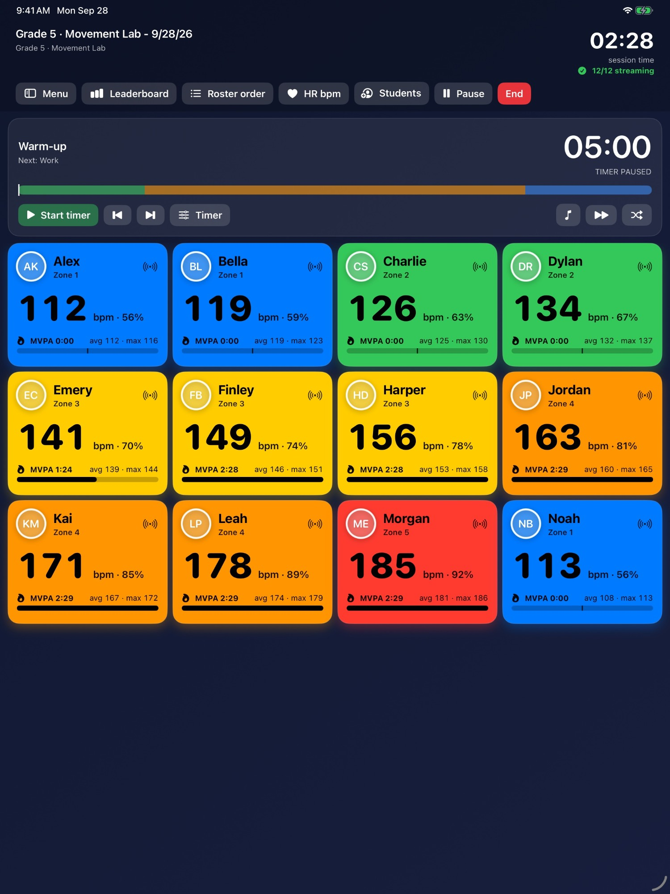
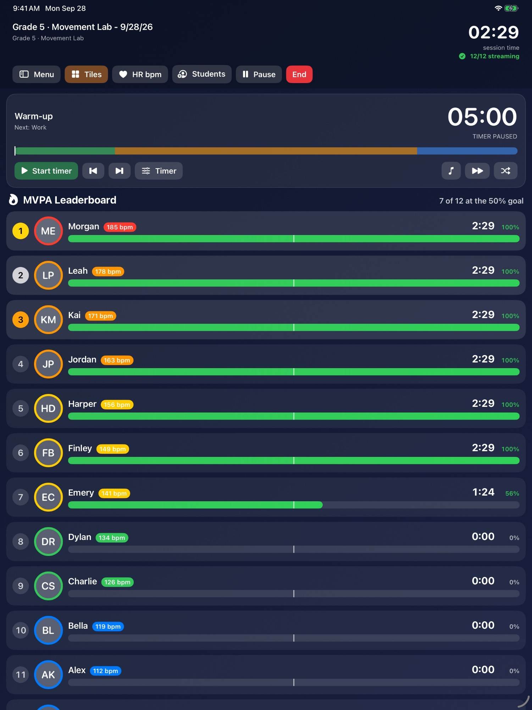
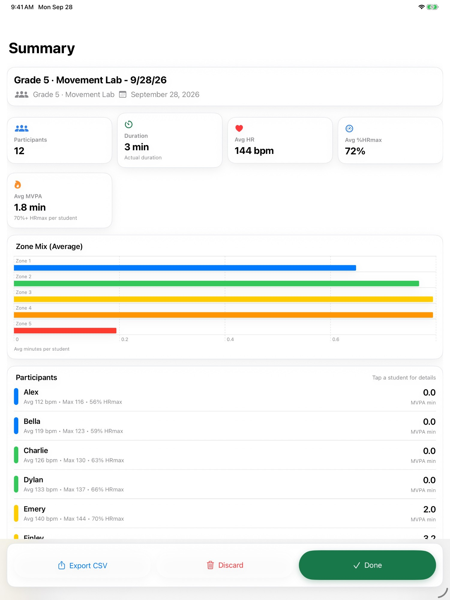
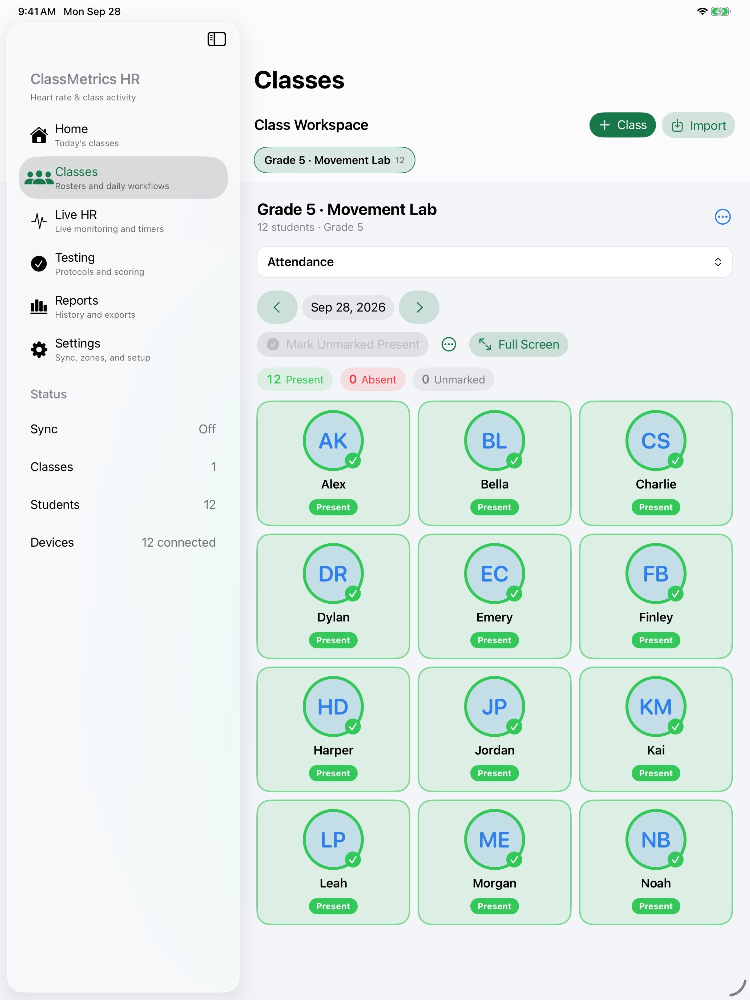
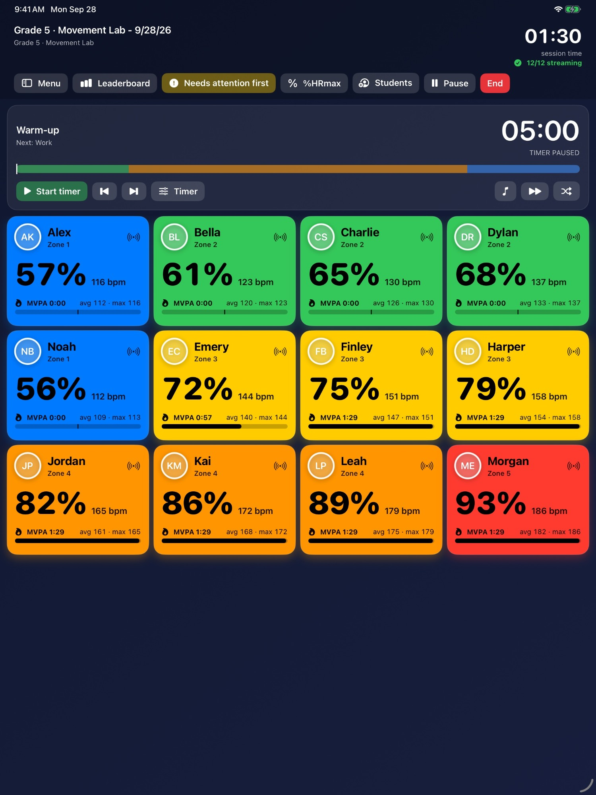

Technology that supports PE teachers
Apps for the gym, built by a physical education teacher educator. See every student's effort live, give feedback on real movement, and hand back data a school can use.

Tools for your needs
ClassMetrics HR
Live heart rate for a whole class on one iPad. Bluetooth straps stream to zone colors in real time, and each lesson becomes a record of time in moderate to vigorous activity.
CoachSAGE
Frame-accurate video analysis for PE teachers and coaches, built as a successor to Coach's Eye. Step through a clip, draw on the movement, and compare two attempts side by side.
Basal
An adaptive macro tracker. Describe a meal in plain language and AI turns it into calories and macros, then your targets adjust to your actual weight trend.
FieldTracker
Field experience management for PE teacher education programs. Placements, hour logs, supervisor sign-off and accreditation reporting in one place.
Streamlined assessment and tracking
Strap up the class and press start. The iPad keeps count, so you can keep teaching.
- A whole class on one screen, colored by heart-rate zone
- An MVPA leaderboard that shows who has reached the goal
- An interval timer and playlists for stations and circuits
- Attendance from the same roster
- Fitness testing, with Presidential Physical Fitness Award scoring and printable certificates
- A lesson summary with average heart rate, zone mix and MVPA per student




Built for teachers by teachers
Process monitoring
A fitness score says what a student can do. Time in a heart-rate zone says what they did in your lesson, which tells you whether the teaching worked.
Built in real classes
Tested in real gyms and placements: noisy, fast, and short on prep time. A tool that needs ten minutes of setup does not get used twice.
No tracking
None of the apps carry analytics libraries or advertising identifiers. Class data stays on the device or in the teacher's own account.
What would help in your gym? Ask for a new app, or a feature in one you already use.
Send a requestQuestions and help
support@movemetric.orgOne person reads that inbox and usually replies within two business days.
Useful to include
- Which app you are asking about
- What you teach, and the grade levels
- For an idea or a feature, the request form is quicker
- For a bug report: the device, what you did, and what happened instead